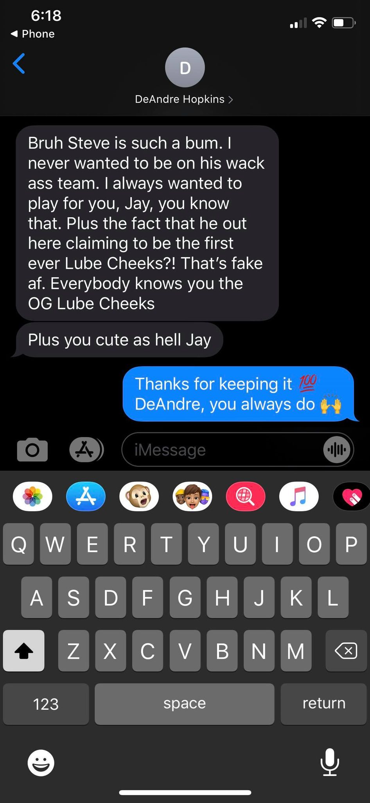

Lube Cheeks--Coming in as our number one spot of the week 7 power rankings is Coach Gloss! Posting a
solid but less than stunning record of 4-2, Coach Gloss is resting in 4th place- but don’t be fooled,
this is by far the best 4th place team I have ever seen! This team is more stacked than the AT&T girl,
Glossman’s bench might even be stronger than some teams’ starting rosters. But all is not lubed in
cheek-ville- reports surfaced Monday afternoon from Jason and his boyfriend best platonic
friend DeAndre
Hopkins, that Steve had in fact stolen his Lube Cheeks Moniker. This controversy had a clear effect on
Steve’s team when Nuk decided to post single digits for MNF. As he walked back to the locker room
Hopkins was overheard saying “Bossman? More like Lossman!” This team slaps tho.
Playoff Chances: 94%
E-Rating: S+
Ram Ranchers--Coach Clancy is debatably deserving of the number 1 spot on this list but due to some
recent concerns about his running back core, and the fact that Steve’s team is the way that it is, the
Ram Ranchers find themselves at spot number 2. Still, Clancy has managed to accrue a whopping 882 points
on the season and has posted 5 wins, throbbing hard, with at least 5 more out in the yard. This team is
making 170 points a regular occurrence and they’re making it look great. Not hard to understand when you
realize Ryan is starting the undisputed greatest QB of all time and his WR1. Coach is bringing honor on
the Clancy fantasy name, keep it up.
Playoff Chances: 98%
E-Rating: Buffalo Bills
The Mockeries--What’s behind door number three?! Coach Mochrie’s team has only lived up to its namesake
by making a mockery of other teams. Kyle defeated Glossman Lossman in week 6 through hard work,
determination, and 3 tenths of a point, making Lube cheeks the absolute laughing stock of Cheek-ville.
This week Kyle finds himself in a good matchup against Ballin on a Budget and I heard that at Coach
Mochrie’s next movie night he plans on just forcing us to watch his yahoo stat tracker feed. Kyle has
found himself starting a solid fantasy roster that is based by a strong running back core, if Chris
Godwin ever picks up this will be a true contender team.
Playoff Chances: 94%
E-Rating: A-
Alex’s Football Team--Our first auto drafted team shows up at 4 on the power rankings! Despite having as
bad a team name as Washington, this team has been performing much better. With a middling record of 3-3,
this team has a more than solid WR core and two good running backs to boot. If Coach Glatz can grant
some stability to his QB room then hell have himself a solid contender. This week however, Alex is
facing off the McDermonators which means he’s probably just going to lose by one point regardless of the
score he posts. Still though 725 points is a solid score and I would be remiss if this roster were to
miss the playoffs
Playoff Chances: 74%
E-Rating: Football
Ballin On a Budget--Coach Pritchard ranks in as 5th with our second autodrafted team proving that robots
really can outperform 1 in 2 Fantasy Football managers. Casey’s team is built similar to Alex’s with a
very Strong group of wide receivers and despite its team name, this roster is not a budget version. Much
like Coach Glatz, Pritchard has been good for a 3-3 record to middle out division 1. Despite coming off
a mediocre performance to win week 6, this team is no-hair don’t-care. After his uninspired win Casey
was asked if he would be bringing the heat against The Mockeries in his week 7 matchup to which he
replied “....” Our on the scene interviewer then told him he must be pleased with his starting roster to
which Pritchard gladly responded “....” This is a joke about Casey not having messenger.
Playoff Chances: 64%
E-Rating: “....”
Team Gloss--From the beginning of the season we all had thought that Coach Drexel had made his team name
Gloss in an ironic attempt at a funny name. Now we know that Jason was pointing out his tormentor for
all to see. A true display of emotional integrity, how strong. Coach Gloss was accused of stealing
Jason’s former team name of “Lube cheeks” and dethroning him as the mayor of Cheek-ville; to that Coach
Drexel said “me too.” Since, damning, totally real, and also not fake pictures of a truly true text
conversation between Jason and current Arizona Cardinals Wide Receiver Deandre Hopkins have surfaced.
These conversations outline DHop’s wishes to play for Team Gloss and also condemn Gloss himself for
being a fake bum. How will this shake up the Bool League? We will have to wait and see.

Playoff Chances: 39%
E-Rating: Cute
McDermonators--Coach Smith came into Bool League offices exclaiming “You’re the worst division leader
I’ve ever heard of!” To which Coach Encina replied “Ah but you have heard of me” and proceeded to steal
the black pearl. If this team was an NFL team they would definitely play in the NFC East. This may
actually be the worst division leader of all time but you know what, this team has got the magic. And by
magic I mean beating any team by a total that is 1 point greater than that team’s total. Like it or not
this team is all but locked into playoffs and once McCaffrey comes back it may be able to post more than
100 points.
Playoff Chances: 91%
E-Rating: David Blaine
The Braniacs--Coach Smith has been on the up-and-up over the past couple weeks, posting his first win
and annexing R2 to the basement of the league. This team is obviously capable of posting an upset
especially with the return of Julio Jones who at no point was Shane considering trading, obviously he
wouldn’t go and do something like shop Julio. The Braniacs have all the makings of a Strong fantasy
team, a solid receiver core that he never tried to trade, 2 backs getting the bulk of their work, and a
top 5 QB but he has unfortunately not been able to translate them into wins. Things do look to be lining
up for Smith though and I would look out for him to be ruining playoff chances in his quest to win his
next 8 consecutive games.
Playoff Chances: 13%
E-Rating: 6/9
Hotchubb Timemachine--This team started out so hot and looked like a genuine contender but just like the
Packers fell victim to Jamel Dean, Russ’s Hot Chubbs fell apart and scored almost no points. This team
is the victim team. Victim to a talented wide receiver room that just isn’t getting it done, victim to
rb injuries, and victim to drafting Leonard fournette in the 8th round. Even with these shortcomings,
the foundation of a good fantasy team is there and if Russ plays his waivers right and lucks out with
injuries we may see him contend for the 6th playoff spot.
Playoff Chances: 18%
E-Rating: D+
Turf Munchers--Aaaaaand coming in at number 10 is Ryaaaan Mungilloooo. R2, man, what has happened? It’s
been a disastrous season for Coach Mungillo beginning with drafting 2 quarterbacks in the first two
rounds of the 2020 Bool League draft. To make matters worse R2 has started the higher scoring QB between
Mahomes and Jackson exactly one out of six weeks. At this rate I would have just handed over the draft
reigns to Erin Clany. At least homing the packers would have netted some more wins this year. Still
though there’s a lot of season left and we're not going to count anyone out just yet, especially with a
couple of huge w’s in Coach Mungillos backfield with the Liberation of Lev Bell and injury to Nick
Chubb, allowing Kareem Hunt to carry the load. Plus this team technically has a higher playoff
percentage than the Braniacs.
Playoff Chances: 16%
E-Rating: Two QB’s up